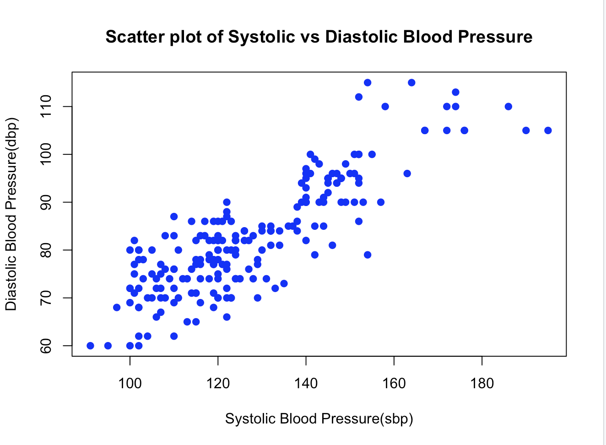

Using the Health_Data, please perform the following functions in R:
Task 8.1
// Load the dataset
library(haven)
Health_Data <- read_spss(".../HealthData.sav")
// Extract the sbp and dbp columns
sbp = Health_Data$sbp
dbp = Health_Data$dbp
// Calculate the correlation between sbp and dbp
correlation = cor(sbp, dbp, use = "complete.obs")
// Print the correlation result
print(correlation)
[1] 0.846808
/*
The correlation coefficient we obtained, r=0.846808, indicates a very strong positive relationship between
systolic blood pressure (sbp) and diastolic blood pressure (dbp) in our dataset.
*/
Task 8.2
// Scatter plot to visualize the relationship
plot(sbp, dbp, main = "Scatter plot of Systolic vs Diastolic Blood Pressure",
xlab = "Systolic Blood Pressure (sbp)",
ylab = "Diastolic Blood Pressure (dbp)",
pch = 19, col = "blue")

// Add a regression line
abline(lm(dbp ~ sbp), col = "red")